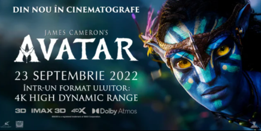

Cinema in concert: Coldplay LIVE BROADCAST from Buenos Aires la Cinema City
By :Angela Alexandru
Pe 29 octombrie, trăiește emoția concertului trupei Coldplay, parte din turneul mondial “Music Of The Spheres”, transmis în direct de pe stadionul River Plate din Buenos Aires - IA-ȚI BILELE ACUM la Live Broadcast From Buenos Aires!
O relansare ca-n filme: Avatar revine pe Marele Ecran în IMAX, 4DX și VIP la Cinema City
By :Angela Alexandru

„Avatar” revine la Cinema City! Din 23 septembrie ești invitat să urmărești din nou în cinematografe fenomenul cinematografic de succes, câștigător al premiului Oscar - „Avatar” se vede acum în variantă remasterizată, 4K HDR (High Dynamic Range), cu sunet actualizat și efecte speciale. Din decembrie, ești așteptat să vezi continuarea, "Calea apei"
One Piece Film Red, la Cinema City. Anime-ul se vede și in IMAX
By :Angela Alexandru
Fenomenul global One Piece va ajunge în cinematografele din România cu data oficială de premieră 14 octombrie, și avanpremiere din 8 și 9 octombrie - înainte de Statele Unite, Canada, Australia și Noua Zeelendă. Filmul va rula în România în varianta 2D, Dolby Atmos, 4DX și IMAX - va fi distribuit în varianta subtitrată.